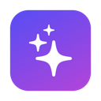

Your notes — jot anything important. Claude merges it with the transcript when the call ends.
Live transcript

Notes start automatically when you join a call in Meet, Teams or Zoom. You can also start them yourself.